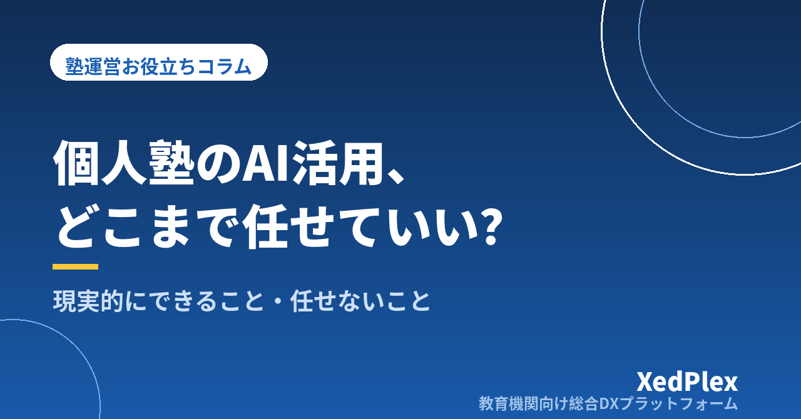

個人塾のAI活用、現実的にできること・任せないほうがいいこと｜「試して終わり」にしない線引きと始め方

「AIで教材が作れる」「AIが質問に答えてくれる」──そんな話を目にするたびに、気になりつつも一歩が踏み出せない。あるいは、一度チャット型のAIに問題を作らせてみたものの、出来にムラがあって結局自分で作り直し、それきり使っていない。個人塾・小規模塾の塾長からは、こうした声をよく聞きます。
AIは万能ではありませんが、使いどころを間違えなければ、ひとりで塾を回す塾長の「作る時間」「考える時間」を確実に軽くしてくれます。この記事では、個人塾が現実的にAIに任せられること、逆に人が担い続けたほうがいいこと、そして「試して終わり」にしないための線引きと始め方を、実務目線で整理します。
なぜ個人塾のAI活用は「試して終わり」になるのか
うまく続かない塾には、共通する原因が3つあります。
- 目的が「AIを使うこと」になっている：減らしたい作業が決まっていないまま触ると、「面白いけれど、何に使えばいいか分からない」で止まります。
- 確認の手間を見積もっていない：AIの出力には誤りや不自然さが混ざります。確認せずに使えないのに、確認の時間を最初から計算に入れていないと、「自分で作ったほうが早い」と感じてしまいます。
- 塾長の頭の中にしかない情報をAIは知らない：どの生徒がどこでつまずいているか、この学校の定期テストはどんな傾向か。こうした前提を渡さずに聞いても、一般論しか返ってきません。
裏を返せば、減らしたい作業を1つ決め、確認の時間込みで見積もり、前提となる情報を渡す──この3つが揃えば、AIは十分に「使える道具」になります。DX全般の優先順位のつけ方は「塾のDX、何から始めればいい？」で整理していますが、AIも同じで、「毎週発生する作業」から手をつけるのが基本です。
現実的に「できること」──下書きを任せて効果が出やすい4つの業務
個人塾でAIが力を発揮するのは、「ゼロから作る」を「下書きを直す」に変えられる業務です。完成品を求めるのではなく、たたき台を出させて人が仕上げる。この使い方なら、出来のムラは「直す手間」に吸収できます。
| 業務 | 任せ方の例 | 人が確認するポイント |
|---|---|---|
| 確認テスト・演習問題の原案 | 単元・難易度・形式・問題数を指定して作らせる | 解答の正誤、学校の進度や教科書との整合、難易度のズレ |
| 説明の言い換え・例題の追加 | 「中2に分かる言葉で」「数値を変えた類題を3つ」など | 説明の正確さ、生徒の理解度に合っているか |
| 保護者向け文面の下書き | お知らせ・行事案内・休講連絡の骨子を渡して整えさせる | 日付・金額・固有名詞、塾の言葉づかいになっているか |
| 指導方針を考えるときの壁打ち | 生徒の状況（匿名化）を伝え、打ち手の候補や面談で話す順序を相談する | 自塾の方針との整合、提案を採用するかどうかの判断 |
とくに効果が大きいのが1つ目の作問です。「塾の確認テスト・小テストの作り方と運用」でも触れたとおり、確認テストが続かない最大の理由は「作る負担」です。AIに原案を出させ、講師が解いて確認し、承認したものだけを使う流れにすれば、作る時間は大きく減り、確認の時間だけが残ります。塾管理システムの中には、この「AIが作問→職員が承認→出題・採点」という流れを備えたものもあり、承認を挟む設計になっているかどうかは、選ぶときの1つの目安になります。
4つ目の壁打ちは、ひとり塾長にとって意外と大きな価値があります。同僚がいない環境では、指導方針や面談の切り出し方を相談する相手がいません。AIに「この生徒には次に何を提案すべきか」を投げ、返ってきた候補を材料に自分で決める。面談準備の材料集めが、その分だけ短くなります。
「任せないほうがいいこと」──人が担い続ける4つの領域
一方で、どれだけAIが進歩しても、個人塾では人が担い続けるべき領域があります。ここを曖昧にすると、信頼を損ねたり、思わぬトラブルにつながったりします。
1. 生徒の評価と最終判断
「この生徒はこのコースでいいか」「志望校をどう提案するか」といった判断は、AIの出力を参考にしても、決めるのは塾長です。AIは生徒の表情や家庭の事情を知りません。判断の根拠を「AIがそう言ったから」にしないことが、保護者への説明責任を守ることにもなります。
2. 生徒・保護者との直接のやりとり
下書きを作らせるのは有効ですが、保護者への返信や生徒への声かけをAIにそのまま送らせるのは避けるべきです。個人塾を選ぶ保護者は「先生が見てくれている」ことに価値を感じています。文面の温度感や、その家庭との関係を踏まえた一言は、人にしか出せません。
3. 個人情報を含むデータの取り扱い
生徒の氏名・住所・成績をそのままチャット型のAIに入力するのは、避けたほうが安全です。入力内容がどう保存・利用されるかはサービスごとに異なり、利用規約を読んでも判断が難しい場合があります。相談したいときは、名前を伏せ、学年と状況だけを伝えれば十分なことがほとんどです。塾が扱う個人情報の考え方は「塾が守るべき生徒の個人情報管理の基本」にまとめています。
4. 事実確認が必要な情報
入試日程・出願条件・教科書の改訂内容など、正確さが問われる情報をAIに聞いて、そのまま保護者に伝えるのは危険です。AIは古い情報や、もっともらしい誤りを返すことがあります。こうした情報は、学校や教育委員会の一次情報で確認する習慣を崩さないでください。
AIに任せるのは「下書き・候補出し・言い換え」。人が担うのは「判断・直接のやりとり・個人情報・事実確認」。迷ったら「これをそのまま保護者に見せて説明できるか」で考えると、線が引きやすくなります。
失敗しにくい始め方──「確認→承認」のルールと費用の見方
始め方でつまずかないために、次の3段階で進めるのがおすすめです。
- 業務を1つに絞る：最初は確認テストの原案か、保護者向け文面の下書きのどちらか1つ。両方同時に始めると、確認が追いつかなくなります。
- 1か月は「確認の時間」を記録する：AIの出力を直すのにかかった時間をメモしておきます。作る時間より確認の時間が短ければ続ける価値があり、逆なら指示の出し方（前提情報の渡し方）を見直します。
- 慣れてから2つ目に広げる：1つ目が習慣になってから、次の業務に広げます。
あわせて、運用ルールを3つだけ決めておきます。
| ルール | 内容 |
|---|---|
| 生徒名を入れない | AIに渡す情報は学年・単元・状況まで。氏名や連絡先は入力しない |
| 確認者を決める | AIが作ったものは、誰が確認して承認するかを決める。生徒に届く前に必ず人を通す |
| 出所を残す | AIで作った問題・文面には「AI原案・○○確認済み」と分かる印を残し、あとから追えるようにする |
費用については、AI機能は「使った分だけ課金される従量制」や「月あたりの無料枠つき」が多く、使い放題ではないことを前提に見ておきましょう。塾管理システムに組み込まれたAI機能を使う場合も、月あたりの無料枠と超過時の単価、使えるのが職員だけか生徒もかを確認しておくと、想定外の請求を防げます。ひとり塾長なら、月に使う回数を先に決めておくだけでも十分です。
生徒にAIを使わせるときの考え方
職員側の活用が落ち着いたら、次に考えたいのが「生徒にどこまで使わせるか」です。ここでも線引きが大切です。
有効なのは、講師が手の空かない時間帯の「一次回答」としての使い方です。自習中の質問にまずAIが答え、あとから講師が確認・補足する。これなら、質問が滞留せず、講師の手間も「確認と補足」に絞れます。「塾の質問対応、講師が足りなくても回る仕組み」で書いたように、AIの回答と職員の回答を同じ場所に記録しておけば、「誰がどう答えたか」があとから追えます。
一方で注意したいのは、生徒が「答えだけを写す」使い方です。これを防ぐには、AIを使う範囲を「解説を読む」「ヒントをもらう」に限る、AIを使った問題には印をつけて講師が口頭で確認する、といったルールをあらかじめ決め、保護者にも「塾ではこう使わせています」と共有しておくことです。家庭でのAI利用に不安を持つ保護者は少なくないため、塾としての方針を先に示すこと自体が安心につながります。
まとめ
個人塾のAI活用は、「何でもできる」と構えるより、「下書きを任せ、人が確認して仕上げる」と割り切ったほうが、続きますし成果も出ます。確認テストの原案、説明の言い換え、保護者向け文面の下書き、指導方針の壁打ち──この4つはAIが得意で、評価と判断、直接のやりとり、個人情報、事実確認は人が担い続ける。この線引きを決め、業務を1つに絞って、確認→承認のルールとともに1か月試してみてください。「自分で作ったほうが早い」が「確認だけで済む」に変わったとき、AIは塾長の時間を取り戻す道具になります。
この記事を書いた運営より
私たちは、個人経営・小規模の学習塾向けに、生徒管理・QRコードでの入退室記録・月次請求・保護者へのLINE/メール通知・AIによる学習支援までをひとつにまとめた教育機関向け総合DXプラットフォーム「XedPlex（ゼドプレックス）」を開発・提供しています。初期費用は0円、料金は生徒1名あたり月額300円（税込）から。生徒50名の塾なら月15,000円（税込）です。全国8つの教室で導入されており、導入塾には紹介ホームページの無料作成も行っています。機能の詳細説明はこちら。
XedPlexの詳細を見る